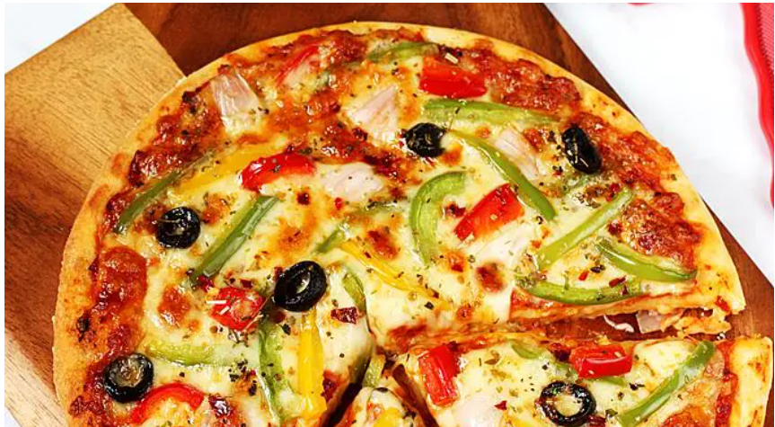

Pizza
Go back to the main page

History of Pizza
Records of people adding other ingredients to bread to make it more flavorful can be found throughout ancient history. In the 6th century BC, the Persian soldiers of the Achaemenid Empire during the rule of Darius the Great baked flatbreads with cheese and dates on top of their battle shields[22][23] and the ancient Greeks supplemented their bread with oils, herbs, and cheese.[24][25]
An early reference to a pizza-like food occurs in the Aeneid, when Celaeno, queen of the Harpies, foretells that the Trojans would not find peace until they are forced by hunger to eat their tables (Book III). In Book VII, Aeneas and his men are served a meal that includes round cakes (like pita bread) topped with cooked vegetables. When they eat the bread, they realize that these are the "tables" prophesied by Celaeno.[26]
Ingredients
- Meat
- Onion and garlic
- Tomato products
- Sugar
- Spices and seasonings
- Lasagna noodles
- Cheeses
- Egg
How to Make Lasagna Step-By-Step
- Prepare the pizza dough
- Prepare the pizza base
- Chop all the vegetables for the pizza
- Spread the sauce and veggies on the base
- Bake the pizza at 250 degree Celsius for 10 minutes